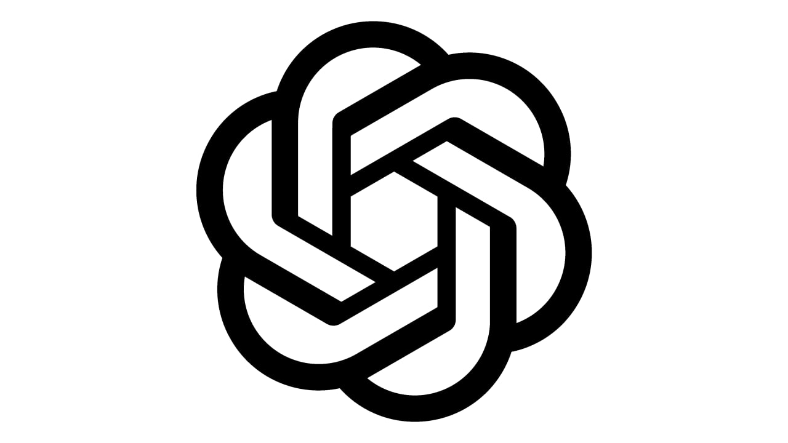

Mermaid Chart — платформа для створення діаграм і блок-схем.
Whimsical— онлайн-сервіс для створення карт знань, схем і вайрфреймів.
Матеріали з інтернету за темою «Генерація схем, карт знань та діаграм.ChatGPT — допоміг в пошуку інформації та підготовці тексту.
